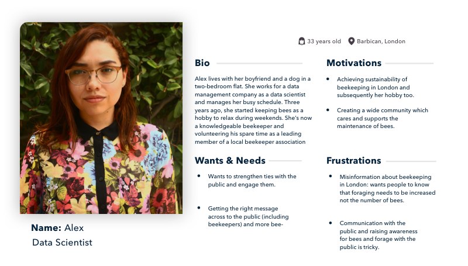
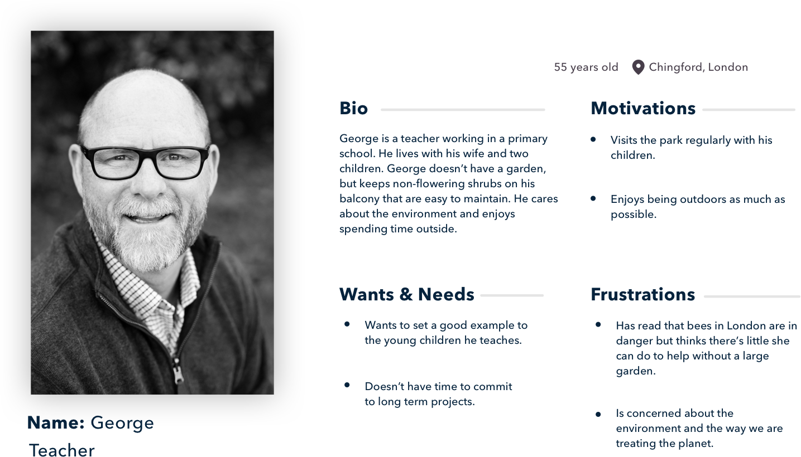
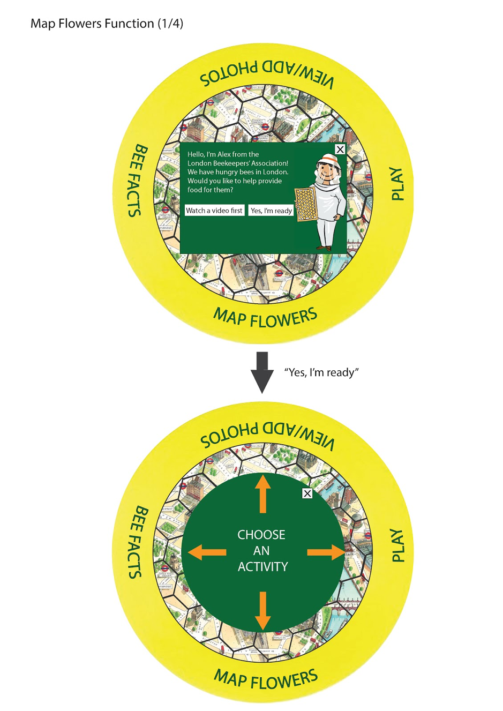
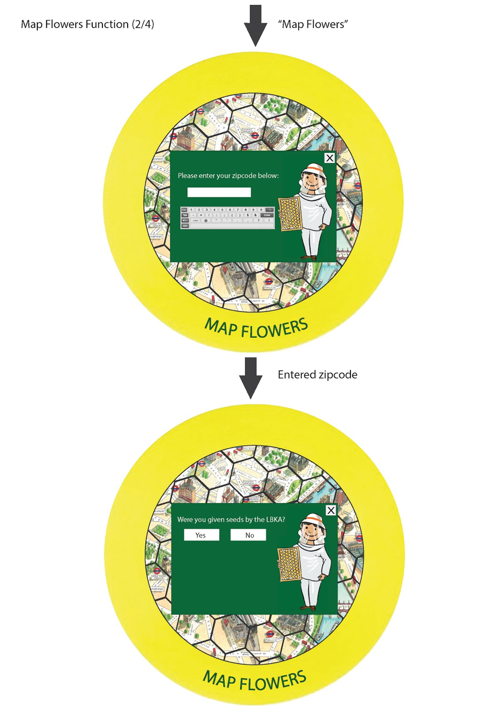
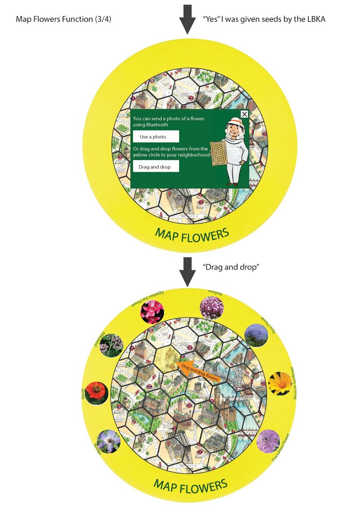
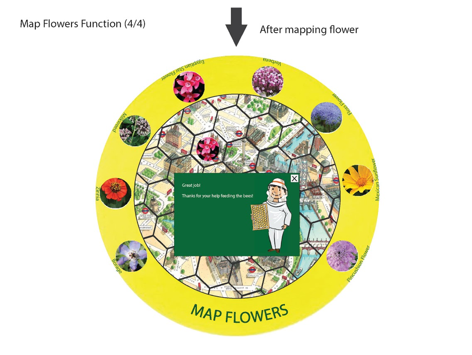

Designing and prototyping an interactive table called Habitable
We designed Habitable as an interactive knowledge hub to connect beekeepers and the general public through a shared interest in making a better habitat for bees. Based on the results of our evaluation, we think that Habitable can offer a fun and easy to use environment for users to learn and share data about bee forage.
London Beekeepers' Association
London Beekeepers’ Association is a charity made up of 300 volunteers from across London. Their mission is to educate members of the public on best practices of beekeeping. They communicate via a Facebook page and a WhatsApp group where they share advice and discuss how they can raise awareness for their cause.
Pain point
Contrary to popular belief, it is not bees in London that are in decline but the habitat needed to provide forage for them. The decreasing lack of quality forage in the city is threatening the bee population and therefore also the sustainability of beekeeping in London. The LBKA want to collaborate with the general public and those that manage green spaces to form a network of allies to help support the bees.
Process
(1) User research
To align our understanding of the LBKA current practices and activities we used observation and interviews. From these techniques, we found that there was a disconnect between the public and the beekeepers. This was important because their major goal was to raise awareness of the well-being of bees. We used this insight to create an empathy map so that we could have a vivid image of the community we are designing for. We also built a persona to give a description of a typical LBKA member and someone from the general public who might use the technology.
Empathy map of London beekeepers

Persona of London beekeepers' association
Persona of general public
London Beekeepers existing user journey

(2) Conceptual design
We implemented the research by sketching many different approaches to the technology we are designing. We agreed that we would use an interactive table with an interface so that we could allow multiple people to use the technology at the same time and thus increase community bonding. We used both our conceptual designs and our user research to help us to define the future user journeys. This helped us visualize what we wanted our technology to achieve and how it would be utilized by our personas.
London Beekeepers' association existing user journey

(3) Detailed design
We created a paper prototype to represent the layout of the key screens and functionalities and also so that we could also test the screen with users. The tasks the system allows users to complete are simple and easy to do because from our interviews with the LBKA, they told us that the public would not do tasks which are too complex.
Prototype of the HabiTable



(4) Evaluation
The objective of the evaluation was to gain insight into the usability and the user satisfaction of the prototype. Five participants were chosen for the usability test as our system was not big or complex. Therefore this number would be sufficient in bringing any usability issues to the surface. During the usability tests, participants were encouraged to use the think-aloud protocol by vocalising their thought process and responses as they performed tasks.